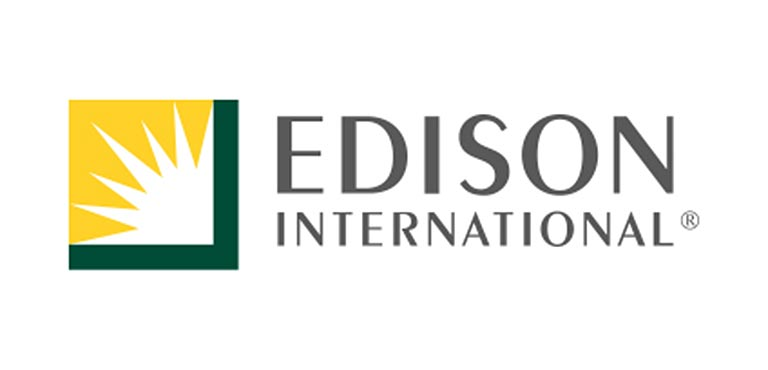

Edison International
Edison International, the parent company of Southern California Edison, is returning as a sustaining sponsor of the U.S. Department of Energy Solar Decathlon to be the 2015 competition's host utility sponsor.
"Edison International recognizes the skills needed for Southern California Edison's future workforce. For this reason, we focus some of our educational funding on programs that prepare students to excel in science, technology, engineering, and mathematics fields," says Ted Craver, chairman and CEO of Edison International. "The Solar Decathlon provides hands-on learning that motivates young people to pursue opportunities in STEM, which is why Edison International is proud to support this award-winning competition."
Edison International's sponsorship provides much of the event's infrastructure, furnishings, and temporary interconnection of bidirectional electricity flow between Southern California Edison's electric grid and the Solar Decathlon village microgrid.
Edison International will have an exhibit space on Edison International Way with shaded covering and seating where attendees can take a break and learn about programs such as the California Solar Initiative and Energy Upgrade California. In addition, it will display Southern California Edison's Hybrid-Powered Mobile Energy Unit. This traveling exhibit features program literature, educational materials, and energy efficiency technologies and displays.
For more than 125 years, Edison International has supported the growth and success of Southern California by safely providing reliable and affordable electric service. Edison International also has a long-standing tradition of investing time and money in the neighborhoods it serves and across communities where it can make a difference. Whether focused on improving access to educational opportunities, protecting the environment, or working together to support vibrant and diverse neighborhoods, Edison International is committed to being a good corporate citizen that has a positive impact in the region.